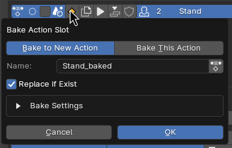

Action Button¶
Action Button are Buttons you can enable and disable in the list
Default Enabled Buttons¶
Some Buttons are On by default while most are off by default
Below are the Default Settings for the Icons
Action Buttons Menu¶
You Can Enable or Disable Each of the Button at the Side of the List
Button Items¶
Previw Clip¶
Preview Animation Clip that is assigned to this action, if there are no Clip assigned, it will show O icon
Link State / Make Local¶
Show Make Local Button if the Action is Link
If the action is a Local Action, It will show A Scene Icon
If the action is a Linked Action, It will be a Clickable Button with Link Icon
That Button will Make Linked Action into Local
Select this Action¶
Select State for this Action, use for baking multiple action and other various features
Action Icon For Decoration¶
A Icon Decoration, Shift Click to Change the Icon
Bake This Action¶
This Button Bake the Active Action
Options¶
Bake To New Action / Bake This Action¶
Bake to New Action: This Option will Create a copy of a New Action and Bake into that Action
Bake This Action: This Option will bake directly to This Action
Name¶
Name of the New Action to Bake to
Only Available when set to “Bake to New Action”
Use Existing Action¶
Bake to Existing Action, and allow to pick from existing action
Only Available if Replace if Exist is turned on
Replace if Exist¶
Replace the Action if an existing action with the Name given is the same
Bake Settings¶
All Options is the Same As Vanila Blender Bake Settings
Duplicate Action¶
Duplicate This Action
Options¶
Name¶
Name of the New Action to be Duplicate to
Play Action¶
Play / Pause This Action
Click to Play when Stopped, and Stop when Play
Shift Click to Play from the Start Frame
Push To NLA¶
Push this Action to NLA
Use Fake User¶
Fake User Boolean
Users¶
User Count of this Action
Manual Frame Range¶
Use Frame Range Boolean
Frame Range¶
Start Frame and End Frame of this Action
Tags¶
Tags of this action used for Filter
Remove¶
Remove this Action, works the same as Remove Action
Support For Multiple Objects¶
Enable the ability to show list for Multi Object